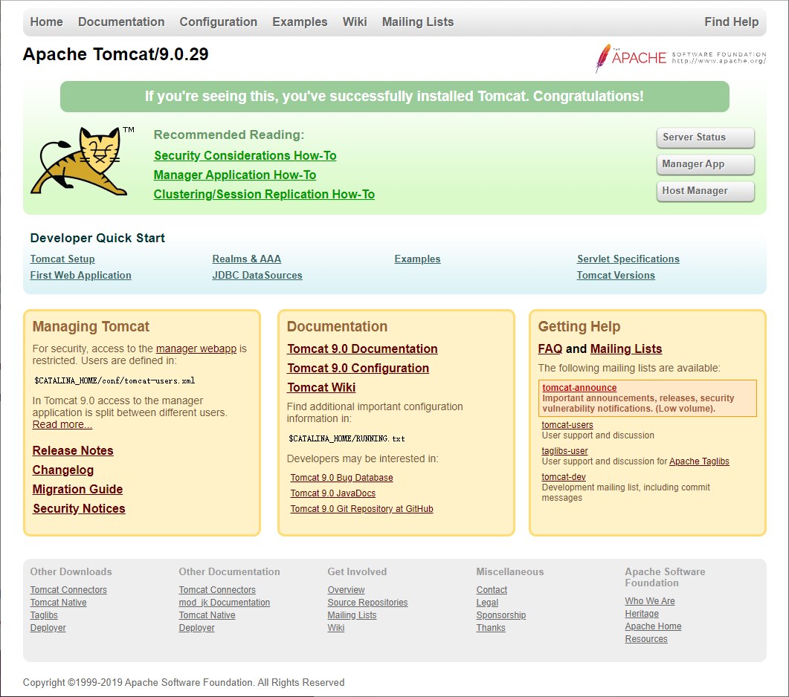

摘要：本文主要学习了如何在Linux环境下安装Tomcat服务器。
检查系统是否配置了Java的环境变量：
1 [root@localhost ~]# java -version
2 java version "1.8.0_91"
3 Java(TM) SE Runtime Environment (build 1.8.0_91-b14)
4 Java HotSpot(TM) 64-Bit Server VM (build 25.91-b14, mixed mode)
5 [root@localhost ~]# 表示已经安装了Java，可以继续下一步，否则需要先安装Java才能继续进行。
Tomcat使用的默认端口是8080，Linux如果开启了防火墙，但没有放开8080端口，是不能通过IP地址访问Linux服务器的。
查看防火墙状态：
1 [root@localhost ~]# firewall-cmd --state
2 running
3 [root@localhost ~]# running表示防火墙已经开启，继续查看端口8080是否已经放开：
1 [root@localhost ~]# firewall-cmd --query-port=8080/tcp
2 no
3 [root@localhost ~]# no说明8080端口并没有放开，需要手动开放：
1 [root@localhost ~]# firewall-cmd --add-port=8080/tcp --permanent
2 success
3 [root@localhost ~]# 重启防火墙：
1 [root@localhost ~]# firewall-cmd --reload
2 success
3 [root@localhost ~]# 再次查询8080端口：
1 [root@localhost ~]# firewall-cmd --query-port=8080/tcp
2 yes
3 [root@localhost ~]# yes说明端口已经放开，可以通过8080端口访问本服务器了。
Tomcat的官网地址：
https://tomcat.apache.org
在官网地址可以下载最新的版本，如果需要下载之前的版本，可以通过下面这个地址：
https://archive.apache.org/dist/tomcat
每一个版本都根据不同的使用环境提供了不同的安装包，可以根据实际情况下载：
apache-tomcat-x.zip：Windows的基础发布包，不包含Windows服务的相关批处理脚本以及Windows下的APR本地库。
apache-tomcat-x.tar.gz：与zip包相同，只是压缩格式不同，主要提供给Linux系统使用。
apache-tomcat-x.exe：Windows的可执行安装包，功能和zip基本一致，适用Windows快捷键以及系统服务形式启动。
apache-tomcat-x-windows-x86.zip：32位Windows发布包，包含32位的Windows系统JVM配合使用的APR本地库，适配32位和64位操作系统。
apache-tomcat-x-windows-x64.zip：64位Windows发布包，包含32位的Windows系统JVM配合使用的APR本地库，只适配64位操作系统。
注意如果需要放在Linux上面，则需要下载后缀格式为 tar.gz 的压缩包。
使用工具将下载好的文件上传到装有Linux系统的电脑上。
将压缩包的内容解压缩到 /opt 目录：
1 [root@localhost ~]# tar -zxvf /opt/apache-tomcat-9.0.29.tar.gz -C /opt/解压后即表示安装完成。
进入解压后的目录，进入 bin 目录，执行 startup.sh 文件：
1 [root@localhost bin]# ./startup.sh
2 Using CATALINA_BASE: /opt/apache-tomcat-9.0.29
3 Using CATALINA_HOME: /opt/apache-tomcat-9.0.29
4 Using CATALINA_TMPDIR: /opt/apache-tomcat-9.0.29/temp
5 Using JRE_HOME: /opt/jdk1.8.0_91
6 Using CLASSPATH: /opt/apache-tomcat-9.0.29/bin/bootstrap.jar:/opt/apache-tomcat-9.0.29/bin/tomcat-juli.jar
7 Tomcat started.
8 [root@localhost bin]# 打开浏览器，在地址栏中输入Linux服务器所在的地址 http://192.168.35.128:8080 ，如果看到如下页面，证明启动成功：

如果没有看到这个页面，说明可能是防火墙的8080端口没有开启，需要手动开启之后再重新尝试访问。
如果需要关闭Tomcat，需要在 bin 目录里执行 shutdown.sh 文件：
1 [root@localhost bin]# ./shutdown.sh
2 Using CATALINA_BASE: /opt/apache-tomcat-9.0.29
3 Using CATALINA_HOME: /opt/apache-tomcat-9.0.29
4 Using CATALINA_TMPDIR: /opt/apache-tomcat-9.0.29/temp
5 Using JRE_HOME: /opt/jdk1.8.0_91
6 Using CLASSPATH: /opt/apache-tomcat-9.0.29/bin/bootstrap.jar:/opt/apache-tomcat-9.0.29/bin/tomcat-juli.jar
7 [root@localhost bin]# 使用 yum search tomcat 命令查看可用的安装包：
1 [root@localhost ~]# yum search tomcat
2 已加载插件：fastestmirror
3 Loading mirror speeds from cached hostfile
4 * base: mirrors.tuna.tsinghua.edu.cn
5 * extras: mirrors.zju.edu.cn
6 * updates: mirrors.tuna.tsinghua.edu.cn
7 ========================================================== N/S matched: tomcat ===========================================================
8 tomcat-admin-webapps.noarch : The host-manager and manager web applications for Apache Tomcat
9 tomcat-docs-webapp.noarch : The docs web application for Apache Tomcat
10 tomcat-javadoc.noarch : Javadoc generated documentation for Apache Tomcat
11 tomcat-jsp-2.2-api.noarch : Apache Tomcat JSP API implementation classes
12 tomcat-jsvc.noarch : Apache jsvc wrapper for Apache Tomcat as separate service
13 tomcat-lib.noarch : Libraries needed to run the Tomcat Web container
14 tomcat-servlet-3.0-api.noarch : Apache Tomcat Servlet API implementation classes
15 tomcat-webapps.noarch : The ROOT and examples web applications for Apache Tomcat
16 tomcatjss.noarch : JSS Connector for Apache Tomcat, a JSSE module for Apache Tomcat that uses JSS
17 tomcat.noarch : Apache Servlet/JSP Engine, RI for Servlet 3.0/JSP 2.2 API
18 tomcat-el-2.2-api.noarch : Expression Language v2.2 API
19
20 名称和简介匹配 only，使用“search all”试试。
21 [root@localhost ~]# 使用 yum install -y tomcat 命令进行安装：
1 [root@localhost ~]# yum install -y tomcat
2 已加载插件：fastestmirror
3 base | 3.6 kB 00:00:00
4 extras | 2.9 kB 00:00:00
5 mysql-connectors-community | 2.5 kB 00:00:00
6 mysql-tools-community | 2.5 kB 00:00:00
7 mysql56-community | 2.5 kB 00:00:00
8 updates | 2.9 kB 00:00:00
9 Loading mirror speeds from cached hostfile
10 * base: mirrors.tuna.tsinghua.edu.cn
11 * extras: mirrors.zju.edu.cn
12 * updates: mirrors.tuna.tsinghua.edu.cn
13 正在解决依赖关系
14 ...
15 总下载量：61 M
16 Downloading packages:
17 Delta RPMs disabled because /usr/bin/applydeltarpm not installed.
18 ...
19
20 已安装:
21 tomcat.noarch 0:7.0.76-9.el7_6
22 ...
23
24 完毕！
25 [root@localhost ~]# 到这里Tomcat就安装完成了，不过这种方式不能选择具体的版本，也不能灵活选择安装位置，所以建议使用预先下载好的安装包进行安装。
启动Tomcat服务器：
1 [root@localhost ~]# systemctl start tomcat.service
2 [root@localhost ~]# 查看服务器的状态：
1 [root@localhost ~]# systemctl status tomcat.service
2 ● tomcat.service - Apache Tomcat Web Application Container
3 Loaded: loaded (/usr/lib/systemd/system/tomcat.service; disabled; vendor preset: disabled)
4 Active: active (running) since 日 2019-11-24 04:28:50 CST; 8s ago
5 Main PID: 11209 (java)
6 CGroup: /system.slice/tomcat.service
7 └─11209 /usr/lib/jvm/jre/bin/java -classpath /usr/share/tomcat/bin/bootstrap.jar:/usr/share/tomcat/bin/tomcat-juli.jar:/usr/...
8
9 11月 24 04:28:51 localhost server[11209]: 十一月 24, 2019 4:28:51 上午 org.apache.catalina.core.StandardService startInternal
10 11月 24 04:28:51 localhost server[11209]: 信息: Starting service Catalina
11 11月 24 04:28:51 localhost server[11209]: 十一月 24, 2019 4:28:51 上午 org.apache.catalina.core.StandardEngine startInternal
12 11月 24 04:28:51 localhost server[11209]: 信息: Starting Servlet Engine: Apache Tomcat/7.0.76
13 11月 24 04:28:51 localhost server[11209]: 十一月 24, 2019 4:28:51 上午 org.apache.coyote.AbstractProtocol start
14 11月 24 04:28:51 localhost server[11209]: 信息: Starting ProtocolHandler ["http-bio-8080"]
15 11月 24 04:28:51 localhost server[11209]: 十一月 24, 2019 4:28:51 上午 org.apache.coyote.AbstractProtocol start
16 11月 24 04:28:51 localhost server[11209]: 信息: Starting ProtocolHandler ["ajp-bio-8009"]
17 11月 24 04:28:51 localhost server[11209]: 十一月 24, 2019 4:28:51 上午 org.apache.catalina.startup.Catalina start
18 11月 24 04:28:51 localhost server[11209]: 信息: Server startup in 40 ms
19 [root@localhost ~]# 关闭服务器：
1 [root@localhost ~]# systemctl stop tomcat.service
2 [root@localhost ~]# 即便是启动了服务，也配置了Java环境变量，防火墙也开放了8080端口，但通过IP地址访问服务器得到的是一个空的页面。
这是因为现在只是安装了一个服务器，服务器里什么都没有，所以通过地址访问主页没有的到什么反馈。
所以如果想看下示例，以及想使用Tomcat提供的一些功能，还需要自主选择安装一些插件。
插件包 tomcat-webapps 提供了一些简单的例子，安装之后就能看到上面的页面了，命令如下：
1 [root@localhost ~]# yum install -y tomcat-webapps
2 已加载插件：fastestmirror
3 Loading mirror speeds from cached hostfile
4 * base: mirrors.tuna.tsinghua.edu.cn
5 * extras: mirrors.tuna.tsinghua.edu.cn
6 * updates: mirrors.tuna.tsinghua.edu.cn
7 正在解决依赖关系
8 ...
9 完毕！
10 [root@localhost ~]# 插件包提供了一些控制服务器的功能，安装了之后就可以使用服务器的登录功能了，命令如下：
1 [root@localhost ~]# yum install -y tomcat-admin-webapps
2 已加载插件：fastestmirror
3 Loading mirror speeds from cached hostfile
4 * base: mirrors.tuna.tsinghua.edu.cn
5 * extras: mirrors.zju.edu.cn
6 * updates: mirrors.tuna.tsinghua.edu.cn
7 正在解决依赖关系
8 ...
9 完毕！
10 [root@localhost ~]# 使用命令查看程序所在的目录：
1 [root@localhost ~]# whereis tomcat
2 tomcat: /usr/sbin/tomcat /etc/tomcat /usr/libexec/tomcat /usr/share/tomcat
3 [root@localhost ~]# 找到 /usr/share/tomcat 目录并查看内容：
1 [root@localhost ~]# ll /usr/share/tomcat/
2 总用量 0
3 drwxr-xr-x. 2 root root 73 11月 24 04:21 bin
4 lrwxrwxrwx. 1 root tomcat 11 11月 24 04:21 conf -> /etc/tomcat
5 lrwxrwxrwx. 1 root tomcat 22 11月 24 04:21 lib -> /usr/share/java/tomcat
6 lrwxrwxrwx. 1 root tomcat 15 11月 24 04:21 logs -> /var/log/tomcat
7 lrwxrwxrwx. 1 root tomcat 22 11月 24 04:21 temp -> /var/cache/tomcat/temp
8 lrwxrwxrwx. 1 root tomcat 23 11月 24 04:21 webapps -> /var/lib/tomcat/webapps
9 lrwxrwxrwx. 1 root tomcat 22 11月 24 04:21 work -> /var/cache/tomcat/work
10 [root@localhost ~]# 这个目录就是Tomcat的安装目录。